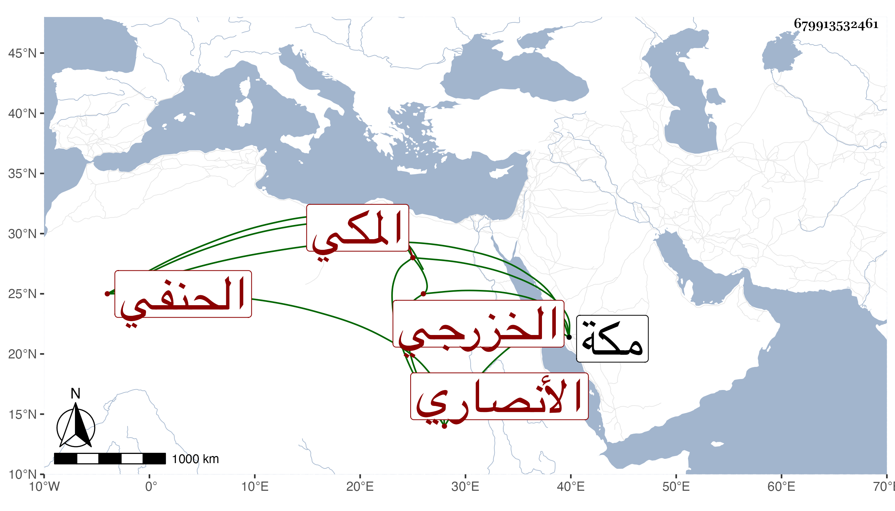

0902Sakhawi.DawLamic.ITO20230111-ara1.EIS1600.679913532461
Biography ID: 679913532461
312
محمد بن يوسف بن أبي القسم بن أحمد بن عبد الصمد الجمال الأنصاري الخزرجي المكي الحنفي ويعرف بابن الحنيفي بفتح أوله وكسر ثانيه . حفظ الأربعين النووية والعمدة في أصول الدين لحافظ الدين النسفي والمنار في أصول الفقه والكنز في الفقه وألفية شعبان الآثاري في النحو المسماة كفاية الغلام في إعراب الكلام وعرض على جماعة منهم شعبان في سنة اثنتي عشرة والمنار فقط على الزين المراغي وأجازه واشتغل وقرر في طلبة درس يلبغا بالمسجد الحرام وسمع على الجمال بن ظهيرة في سنة أربع عشرة مسند عائشة للمروزي وأشياء وكان يتردد إلى نخلة وأعمالها ولعله كان إماما ببعض محالها . مات بمكة في ذي الحجة سنة ست وأربعين . أرخه ابن فهد .
